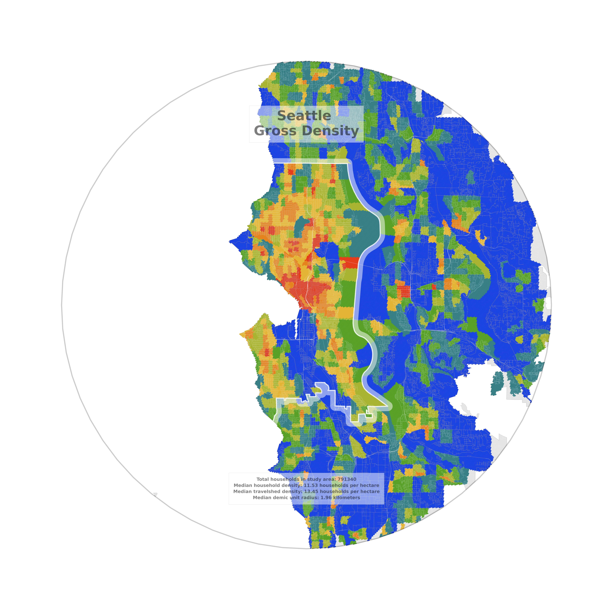
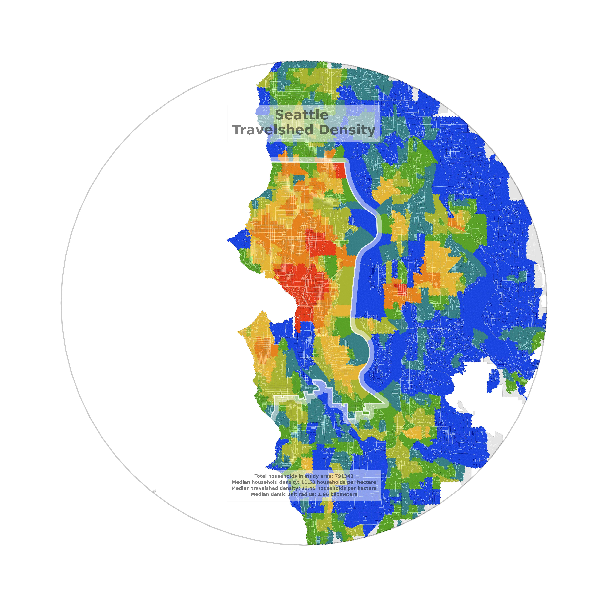

Deriving Composite Density
(Images may take a moment to load)
Seattle Gross Density
To derive composite density, we start with gross household density, or the density of households per land area for each of the block groups in the study area. This first plot displays gross household density values for each of the block groups analyzed in the Seattle test case, with the red zones containing the block groups with the highest densities and the blue zones containing the block groups with the lowest densities. Note that each set of zones that is shaded a given color contains approximately the same proportion of the study area’s households; hence, the total area of the red zones is much smaller than the total area of the blue zones.
Seattle Travelshed Density
Using gross household density in conjunction with other user-defined parameters, we can derive two more values for each of the block groups in the study area. One of these two values is a travelshed density value, which the program calculates by taking the household-weighted average of the gross household density of all block groups whose centroids fall within a user-defined travelshed radius of each block group’s centroid. This second plot displays travelshed density values for the Seattle test case, with the red areas again containing the block groups with the highest densities and the blue areas again containing the block groups with the lowest densities.
Seattle Demic Unit Radius

The other of these values is a demic unit radius value, which the program calculates by iteratively summing the households from the block group’s nearest block groups until the number of households in a user-defined demic unit is reached. The radius is equal to the distance between the block group’s centroid and the centroid of its tipping-point block group, or the block group whose addition to the demic unit pushes the total sum of households over the user-defined demic unit threshold. This third plot displays demic unit radius values for the Seattle test case, with the red areas containing the block groups with the smallest radii (corresponding to high densities) and the blue areas again containing the block groups with the largest radii (corresponding to low densities).
Seattle Composite Density

Once we have calculated all three of the values plotted above, we can combine them into a composite density metric that takes each of the values into account. The composite density value is calculated for each urban block group using the household-weighted quantiles of the block group’s gross density, travelshed density, and demic unit radius values, relative to all of the urban block groups in the study area, with each of those component metrics weighted according to the user’s preference. This fourth plot displays composite density values for the Seattle test case; as before, the red areas contain the block groups with the highest densities and the blue areas contain the block groups with the lowest densities.